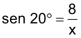
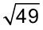

Avião decolando do Aeroporto da
cidade de Estocolmo, capital da Suécia.
Brorsson / wikimedia.commons
Avião Airbus A330-200 depois de decolar do Aeroporto Internacional Sheremetyevo.
Moscou (Rússia). Junho, 2011.
Trigonometria
converse
Quando um avião decola, ele forma com o solo um ângulo α. Conhecendo-se a medida desse ângulo e a altura na qual se encontra a aeronave, é possível determinar, pela trigonometria, a distância retilínea percorrida por ela. Altura de edifícios e relevos, distância entre estrelas e inclinações de rampas são outros exemplos de medidas que podem ser determinadas por esse ramo da Matemática.

1. Em situações como a decolagem de um avião, podemos utilizar o desenho de um triângulo como modelo matemático para determinar essas medidas. A trigonometria estabelece a relação entre as medidas de segmentos e ângulos em um triângulo. Como você representaria, por meio de um desenho, a situação da decolagem de uma aeronave? Explique o triângulo que você utilizou e o que representam as medidas que indicou.
2. No caso da rampa utilizada por cadeirantes, como você poderia representar esta situação por meio de um modelo matemático? Explique.
S.I./ Lisboa Inacessível
30o
Considere um triângulo retângulo ABC, retângulo em A, em que a é a medida da hipotenusa , e b e c são as medidas dos catetos  e
e  , respectivamente.
, respectivamente.
Em relação ao ângulo α temos que:
é o cateto oposto;é o cateto adjacente.Já em relação ao ângulo β, temos que:
é o cateto oposto; é o cateto adjacente.Seno de um ângulo
Observe os triângulos retângulos:
O estudo da trigonometria (do grego trigono = triângulo; metria = medida) nos permite resolver situações-problema práticas em que precisamos medir grandes distâncias ou em situações em que há dificuldade de realizar as medições, por exemplo, a altura de um edifício, de uma montanha ou a largura de um rio.
Agora, utilizando a semelhança de triângulos vamos definir seno de um ângulo.
Os triângulos OAB, OCD, OEF, OGH, etc., são triângulos semelhantes pelo caso AA, pois todos os triângulos são retângulos e o ângulo α é comum a todos esses triângulos. Observe:
Temos que:
Em que k é uma constante.
Essa razão depende somente do ângulo α e é chamada de seno de α.
Relações trigonométricas no
triângulo retângulo
30o
30o
Cosseno de um ângulo
Agora vamos estudar outra razão trigonométrica importante.
Os triângulos retângulos abaixo são semelhantes e todos têm um ângulo de 60°.
Vamos determinar a razão entre a medida do cateto adjacente ao ângulo de 60° e a medida da hipotenusa de cada triângulo.
Note que nos três triângulos a razão é a mesma.
Agora, utilizando a semelhança de triângulos, vamos definir o cosseno de um ângulo.
Os triângulos OAB, OCD, OEF, OGH, etc., são triângulos semelhantes pelo caso AA, pois todos os triângulos são retângulos e o ângulo α é comum a todos eles. Observe:
Portanto:
Em que k é uma constante.
Essa razão depende somente do ângulo α e é chamada de cosseno de α.
Tangente de um ângulo
Agora estudaremos outra razão trigonométrica em um triângulo retângulo.
Os triângulos retângulos abaixo são semelhantes e todos têm um ângulo de 45°.
Vamos determinar a razão entre a medida do cateto oposto e a medida do cateto adjacente ao ângulo de 45° de cada triângulo.
Note que nos três triângulos a razão é a mesma.
Agora, utilizando a semelhança de triângulos, vamos definir tangente de um ângulo.
Os triângulos OAB, OCD, OEF, OGH, etc., são semelhantes pelo caso AA, pois todos os triângulos são retângulos e o ângulo α é comum a todos esses triângulos. Observe:
Temos que:
Em que k é uma constante.
Essa razão k depende somente do ângulo α e é chamada de tangente de α.
60o
60o
60o
Em resumo, temos:
A
c
B
b
b
a
α
C
Tabela de razões trigonométricas
Seno, cosseno e tangente são conhecidas como razões trigonométricas. Os valores de cada razão dos ângulos agudos (1° a 89°) podem ser obtidos por meio de uma tabela de razões trigonométricas.
Consulte a tabela da próxima página na resolução das atividades.
Reinaldo Rosa / Acervo da Editora.
Tabela de razões trigonométricas
|
Ângulo |
sen |
cos |
tg |
Ângulo |
sen |
cos |
tg |
|
1° |
0,017 |
1,000 |
0,017 |
46° |
0,719 |
0,695 |
1,036 |
|
2° |
0,035 |
0,999 |
0,035 |
47° |
0,731 |
0,682 |
1,072 |
|
3° |
0,052 |
0,999 |
0,052 |
48° |
0,743 |
0,669 |
1,111 |
|
4° |
0,070 |
0,998 |
0,070 |
49° |
0,755 |
0,656 |
1,150 |
|
5° |
0,087 |
0,996 |
0,087 |
50° |
0,766 |
0,643 |
1,192 |
|
6° |
0,105 |
0,995 |
0,105 |
51° |
0,777 |
0,629 |
1,235 |
|
7° |
0,122 |
0,993 |
0,123 |
52° |
0,788 |
0,616 |
1,280 |
|
8° |
0,139 |
0,990 |
0,141 |
53° |
0,799 |
0,602 |
1,327 |
|
9° |
0,156 |
0,988 |
0,158 |
54° |
0,809 |
0,588 |
1,376 |
|
10° |
0,174 |
0,985 |
0,176 |
55° |
0,819 |
0,574 |
1,428 |
|
11° |
0,191 |
0,982 |
0,194 |
56° |
0,829 |
0,559 |
1,483 |
|
12° |
0,208 |
0,978 |
0,213 |
57° |
0,839 |
0,545 |
1,540 |
|
13° |
0,225 |
0,974 |
0,231 |
58° |
0,848 |
0,530 |
1,600 |
|
14° |
0,242 |
0,970 |
0,249 |
59° |
0,857 |
0,515 |
1,664 |
|
15° |
0,259 |
0,966 |
0,268 |
60° |
0,866 |
0,500 |
1,732 |
|
16° |
0,276 |
0,961 |
0,287 |
61° |
0,875 |
0,485 |
1,804 |
|
17° |
0,292 |
0,956 |
0,306 |
62° |
0,883 |
0,469 |
1,881 |
|
18° |
0,309 |
0,951 |
0,325 |
63° |
0,891 |
0,454 |
1,963 |
|
19° |
0,326 |
0,946 |
0,344 |
64° |
0,899 |
0,438 |
2,050 |
|
20° |
0,342 |
0,940 |
0,364 |
65° |
0,906 |
0,423 |
2,145 |
|
21° |
0,358 |
0,934 |
0,384 |
66° |
0,914 |
0,407 |
2,246 |
|
22° |
0,375 |
0,927 |
0,404 |
67° |
0,921 |
0,391 |
2,356 |
|
23° |
0,391 |
0,921 |
0,424 |
68° |
0,927 |
0,375 |
2,475 |
|
24° |
0,407 |
0,914 |
0,445 |
69° |
0,934 |
0,358 |
2,605 |
|
25° |
0,423 |
0,906 |
0,466 |
70° |
0,940 |
0,342 |
2,747 |
|
26° |
0,438 |
0,899 |
0,488 |
71° |
0,946 |
0,326 |
2,904 |
|
27° |
0,454 |
0,891 |
0,510 |
72° |
0,951 |
0,309 |
3,078 |
|
28° |
0,469 |
0,883 |
0,532 |
73° |
0,956 |
0,292 |
3,271 |
|
29° |
0,485 |
0,875 |
0,554 |
74° |
0,961 |
0,276 |
3,487 |
|
30° |
0,500 |
0,866 |
0,577 |
75° |
0,966 |
0,259 |
3,732 |
|
31° |
0,515 |
0,857 |
0,601 |
76° |
0,970 |
0,242 |
4,011 |
|
32° |
0,530 |
0,848 |
0,625 |
77° |
0,974 |
0,225 |
4,331 |
|
33° |
0,545 |
0,839 |
0,649 |
78° |
0,978 |
0,208 |
4,705 |
|
34° |
0,559 |
0,829 |
0,675 |
79° |
0,982 |
0,191 |
5,145 |
|
35° |
0,574 |
0,819 |
0,700 |
80° |
0,985 |
0,174 |
5,671 |
|
36° |
0,588 |
0,809 |
0,727 |
81° |
0,988 |
0,156 |
6,314 |
|
37° |
0,602 |
0,799 |
0,754 |
82° |
0,990 |
0,139 |
7,115 |
|
38° |
0,616 |
0,788 |
0,781 |
83° |
0,993 |
0,122 |
8,144 |
|
39° |
0,629 |
0,777 |
0,810 |
84° |
0,995 |
0,105 |
9,514 |
|
40° |
0,643 |
0,766 |
0,839 |
85° |
0,996 |
0,087 |
11,430 |
|
41° |
0,656 |
0,755 |
0,869 |
86° |
0,998 |
0,070 |
14,301 |
|
42° |
0,669 |
0,743 |
0,900 |
87° |
0,999 |
0,052 |
19,081 |
|
43° |
0,682 |
0,731 |
0,933 |
88° |
0,999 |
0,035 |
28,636 |
|
44° |
0,695 |
0,719 |
0,966 |
89° |
1,000 |
0,017 |
57,290 |
|
45° |
0,707 |
0,707 |
1,000 |
- |
- |
- |
- |
Acompanhe, agora, algumas situações que envolvem razões trigonométricas.
Situação 1
Um avião decola de um aeroporto (A) e sobe num ângulo constante de 20°, fazendo seu percurso em linha reta, como mostra a figura. Após quantos quilômetros de deslocamento do aeroporto, o avião atinge a altitude de 8 000 metros?

x → quilômetros percorridos pelo avião até alcançar a altitude de 8 000 metros (corresponde à medida da hipotenusa);
8 000 m = 8 km → altitude do avião (corresponde ao cateto oposto ao ângulo de 20°).
Temos uma relação entre a medida do cateto oposto ao ângulo de 20° e a medida da hipotenusa. Então:

Consultando a tabela de razões trigonométricas, temos:
sen 20° = 0,342
Assim:
Logo, após percorrer aproximadamente 23,4 km, mantendo o ângulo de subida de 20°, o avião atingirá a altitude de 8 000 metros.
Acervo da Editora
Situação 2
Em um canteiro de obras, foi feita uma rampa de 2 metros de comprimento, usada como acesso de carrinho de mão a um desnível. Essa rampa tem projeção ortogonal de 1,94 metros, conforme a figura:

Determine o ângulo x de inclinação dessa rampa em relação ao solo.
Temos:
Há uma relação entre a medida do cateto adjacente ao ângulo x e a medida da hipotenusa. Então:
Consultando a tabela de razão trigonométrica, na coluna dos cossenos, 0,97 corresponde ao ângulo de 14°, ou seja:
cos 14° = 0,97
Portanto:
x = 14°
Logo, o ângulo de inclinação da rampa com o solo é de 14°.
Situação 3
Com auxílio de um teodolito, Luiz observa, a 30 metros de distância, o topo de uma torre. O ângulo fornecido pelo teodolito é de 35°. Qual é a altura total da torre, sabendo-se que Luiz mede 1,80 metros de altura?
H → Altura total da torre
H = h + 1,80
Temos uma relação entre a medida do cateto oposto e a do cateto adjacente ao ângulo de 35°, pela qual podemos determinar a medida h. Então:
Pela tabela, temos que tg 35° = 0,7. Assim:
h = 0,7 ∙ 30
h = 21 m
Como H = h + 1,80, temos:
H = 21 + 1,80
H = 22,8 m
Logo, a altura total da torre é 22,8 metros.
1,80 m
35o
30 m
h
H
Acervo da Editora
Acervo da Editora
Encontre soluções

B
42o
A
a
3,3 cm
C
20 cm
A
C
18o
c
B
C
8 cm
22o
B
A
c
10 cm
C
b
16o
B
A
1
2
α
O Decreto-Lei n.º 10.098, de 2 de dezembro de 2000 é conhecido como Lei da Acessibilidade. A legislação regulamenta um atendimento específico no que se refere a projetos arquitetônicos, urbanísticos, de comunicação, de informação e de transporte coletivo. Além disso, regulamenta a execução de qualquer tipo de obra que tem destinação pública ou coletiva.
A Lei de Acessibilidade garante, por exemplo, que nos projetos arquitetônicos haja rampas para que os cadeirantes tenham acesso aos edifícios.
A Associação Brasileira de Normas Técnicas (ABNT) determina que a inclinação da rampa destinada a cadeirantes seja de, no máximo, 8,33%, e o desnível máximo de cada seguimento da rampa é de 1,50 m.
Na construção civil, é comum indicar a inclinação do ângulo α de uma rampa em porcentagem.
A porcentagem de inclinação i é dada por:

Em que:
Vamos supor que, em uma edificação, haja uma rampa para cadeirantes com V = 0,4 m e H = 8 m.
Nessas condições, responda ao que se pede:
Angela Peres / Agência de Notícias do Acre

Edifício com acesso para cadeirante. Rio Branco, AC, 2010.
Ângulos de 30°, 45° e 60°
Vamos determinar as razões trigonométricas dos ângulos de 30°, 45° e 60°.
Seno, cosseno e tangente de 45°
Vamos verificar o valor do seno, cosseno e tangente do ângulo de 45°.
Em um triângulo retângulo isósceles, cujos ângulos internos medem 90° e 45° e os catetos medem , vamos, primeiramente, determinar a medida (x) da hipotenusa pelo Teorema de Pitágoras.
Logo, a medida da hipotenusa é .
Então:

Seno, cosseno e tangente de 30° e 60°
Por meio de um triângulo equilátero, podemos determinar o seno, o cosseno e a tangente para os ângulos de 30° e 60°.
O triângulo ABC é equilátero, com os lados medindo e a altura medindo h.
A
B
x
45o
C
A
B
ℓ
45o
C

Já vimos que em um triângulo equilátero, . Além disso, a altura h divide o lado em duas partes iguais.
Assim, temos:


Lembre-se de que cada ângulo interno de um triângulo equilátero mede 60o e que, ao traçar a altura h, determina-se também a bissetriz do ângulo.
B
60o
30o
A
30o
60o
C
B
60o
2
30o
A
H
h
C
h
Reinaldo Rosa / Acervo da Editora.
Encontre soluções
 = 1,73.
= 1,73. = 1,4)
= 1,4)
Vamos construir um teodolito para, em seguida, usá-lo com os conhecimentos que você adquiriu sobre trigonometria.
Materiais necessários
Procedimentos
Pronto! Agora que você já tem o seu teodolito, sob a orientação do professor, escolha, com seus colegas, algo a ser medido em sua escola, como construções, árvores ou objetos.
Material necessário
Procedimentos
1.o Posicione o teodolito conforme mostra a figura.
2.o Com o tubo de caneta paralelo ao chão, vá girando o teodolito até avistar o ponto mais alto do lugar a ser medido. Solicite a um colega que o ajude na medição das distâncias necessárias para o cálculo da altura.
3.o Anote no caderno a medida do ângulo encontrado, bem como as demais medidas necessárias.
4.o Para os cálculos, baseie-se na tabela de razões trigonométricas ou use a calculadora. Converse com seu colega sobre como proceder para realizar os cálculos.
Após percorrer 2 000 metros em linha reta, a altura H atingida pelo avião, em metros, é
(Use os valores da tabela dada)
Reinaldo Rosa / Acervo da Editora.
Agora, em uma tabela, vamos organizar os valores encontrados do seno, do cosseno e da tangente de 30o, 45o e 60o.
Reinaldo Rosa / Acervo da Editora.
Reinaldo Rosa / Acervo da Editora.
|
30° |
45° |
60° |
|
|
Seno |
|||
|
Cosseno |
|||
|
Tangente |
1 |
|
Reinaldo Rosa / Acervo da Editora.
Reinaldo Rosa / Acervo da Editora.
Acervo da Editora

Acervo da Editora

Acervo da Editora
Acervo da Editora
Acervo da Editora

Acervo da Editora

Evan-Amos
wikimedia.commons e Coyau / wikimedia.commons
unidade 6 - capítulo 1

Reinaldo Rosa / Acervo da Editora.
18o
unidade 6 - capítulo 2
As relações trigonométricas estudadas até aqui são válidas somente para os triângulos retângulos.
A seguir, veremos duas relações trigonométricas aplicadas a um triângulo qualquer.
Lei dos senos
Considere o triângulo ABC:
Em que:
; ;
;Observe agora os triângulos ABH1 e ACH1:
sen β =
h1 = c ∙ sen β (I)
sen θ =
h1 = b ∙ sen θ (II)
Igualando (I) e (II), temos:
c ∙ sen β = b ∙ sen θ
Agora, observe os triângulos :
sen θ =
h2 = a ∙ sen θ (III)
sen α =
h2 = c ∙ sen α (IV)
Igualando (III) e (IV), temos:
a ∙ sen θ = c ∙ sen α
2
Portanto:
Com o auxílio de uma calculadora científica, calcule a medida do lado no triângulo ABC.

Além das quatro operações básicas, as calculadoras científicas apresentam outras funções, como seno  , cosseno e tangente
, cosseno e tangente  .
.
S.I. / Appjenny
Aplicando a lei dos senos, temos:
Considerando 3 casas decimais, os valores do seno para cada um dos ângulos são:
sen 86° = 0,998
sen 62° = 0,883
Portanto:
0,883 ∙ a = 4 ∙ 0,998
Utilizando a calculadora para os cálculos temos:
a ≅ 4,52 cm
A medida aproximada do lado é 4,52 cm.
Lei dos cossenos
Considere o triângulo ABC abaixo:

Em que:
; sobre o lado ; sobre o lado .Aplicando o Teorema de Pitágoras no ΔABH, temos:

Aplicando o Teorema de Pitágoras no ΔACH, temos:
Igualando (I) e (II), temos:
c2 - (a - x)2 = b2 - x2
c2 = b2 - x2 + (a - x)2
c2 = b2 - x2 + a2 - 2ax + x2
c2 = b2 + a2 - 2ax (III)
No ∆ACH:
cos θ =
x = b ∙ cos θ (IV)
Substituindo (IV) em (III), obtemos:
De modo análogo, temos:
Reinaldo Rosa / Acervo da Editora.
Observe a situação a seguir.
Uma estação de tratamento de água abastece as caixas-d’água dos bairros B e C de uma cidade, conforme mostra a ilustração. A companhia responsável pelo abastecimento de água quer fazer uma ligação direta entre as caixas-d’água desses bairros. Qual é a distância entre essas caixas?
Aplicando a lei dos cossenos, temos:
a2 = b2 + c2 - 2bc ∙ cos a
a2 = 52 + 82 - 2 ∙ 5 ∙ 8 ∙ cos 60°
a2 = 25 + 64 - 80 ∙
a2 = 49
a = ± 
a = ± 7
a1 = +7 ou a2 = -7 (não convém)
A distância entre as duas caixas-d’água é de 7 km.
Determine a medida do terceiro lado dessa figura.
.
Encontre soluções
B
30o
x
A
60o
4 cm
C
B
4 cm
60o
A
8 cm
x
C
A
x
45o
B
6 cm
60o
C
Reinaldo Rosa / Acervo da Editora.
Reinaldo Rosa / Acervo da Editora.
Probabilidade e estatística
relembrE
Indique as alternativas corretas:
a) d) 
b) e)
c)

Supondo que os pontos A, B e C sejam vértices de um triângulo cujo ângulo do vértice A mede 60°, então a resposta correta que Calvin deveria encontrar para o problema é, em centímetros:
a) c) e) 
b) d) 

a)  c) e)
c) e)
b) d)
(Dados: sen 55º = 0,82, cos 55º = 0,57, tg 55º = 1,43)
A altura h do edifício é, em metros, aproximadamente
Vamos realizar uma pesquisa amostral na sua escola e levantar informações para análise.
Reúna-se com um colega e escolha um tema atual relacionado à realidade social. Para isso, sigam estas etapas:

Reinaldo Rosa / Acervo da Editora.